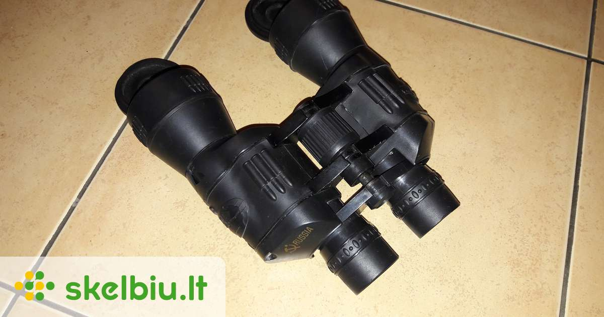

Welcome to Fotoaparatai
Fotoaparatai
2020.10.29 06:22Prisijungimas Prisijungimas Palyginti prekes (0) Prekių krepšelis Krepšelis tuščias. Viso prekių už 0 00 € Peržiūrėti krepšelį Iki nemokamo pristatymo liko 60 00 € Pristatysime nemokamai! Dirbame:
I-V 10 00 - 19 00 Kreipkitės:
+370 658 00700 Kodėl verta
PIRKTI PAS MUS Fotoaparatai Kompaktiniai fotoaparatai Sisteminiai fotoaparatai Momentiniai fotoaparatai Analoginiai fotoaparatai Kaip išsirinkti fotoaparatą Optika Objektyvai sisteminiams fotoaparatams Objektyvai veidrodiniams fotoaparatams Objektyvų priedai Priedai Baterijos Blyksčių priedai Laikmenos Garsas Dirželiai Kabeliai Telefonų priedai Priežiūros reikmenys Kiti priedai Trikojai Trikojai foto stovai Trikojai video stovai Trikojų priedai Krepšiai Dėklai Krepšiai Žiniakrepšiai Kuprinės Lagaminai Krepšiai stovams Krepšiai studijai Apšvietimas Apšvietimas Apšvietimo priedai Studijos įranga Analoginė fotografija Analoginė laboratorija Skaitmeninė laboratorija Naujienos 2020 2019 2018 2017 Straipsniai Fotoaparatai Kompaktiniai fotoaparatai Sisteminiai fotoaparatai Momentiniai fotoaparatai Analoginiai fotoaparatai Kaip išsirinkti fotoaparatą Optika Objektyvai sisteminiams fotoaparatams Objektyvai veidrodiniams fotoaparatams Objektyvų priedai Priedai Baterijos Blyksčių priedai Laikmenos Garsas Dirželiai Kabeliai Telefonų priedai Priežiūros reikmenys Kiti priedai Trikojai Trikojai foto stovai Trikojai video stovai Trikojų priedai Krepšiai Dėklai Krepšiai Žiniakrepšiai Kuprinės Lagaminai Krepšiai stovams Krepšiai studijai Apšvietimas Apšvietimas Apšvietimo priedai Studijos įranga Analoginė fotografija Analoginė laboratorija Skaitmeninė laboratorija Naujienos 2020 2019 2018 2017 Straipsniai Pradžia / Fotoaparatai
Fotoaparatai
Kompaktiniai fotoaparatai Sisteminiai fotoaparatai Momentiniai fotoaparatai Analoginiai fotoaparatai Kaip išsirinkti fotoaparatąPrekių filtras
Valyti Gamintojas Valyti Sony Fujifilm Olympus Ilford Polaroid Originals Fokusavimo sistema Valyti Automatinė Automatinė / rankinė Fotoaparato tipas Valyti Kompaktinis Sisteminis Momentinis Efektyvūs vaizdo taškai Valyti 3.7 mln. taškų 4.9 mln. taškų 12 mln. taškų 16 mln. taškų 18 mln. taškų 20 mln. taškų 24 mln. taškų 26.1 mln taškų 42 mln. taškų 61 mln. taškų Vaizdo jutiklio dydis Valyti ~ 6.17 x 4.55 mm ( 1/2.3" ) ~ 13.2 x 8.80 mm ( 1.0" ) ~ 17.3 x 13.0 mm ( Micro 4/3 ) ~ 23.5 x 15.6 mm ( APS-C ) ~ 23.5 x 15.7 mm ( APS-C ) ~ 35.7 x 23.8 mm (FF) ~ 36.0 x 24.0 mm ( FF ) Ekrano tipas Valyti Fiksuotas ekranas Fiksuotas, lietimui jautrus ekranas Paverčiamas ekranas Paverčiamas, lietimui jautrus ekranas Vartomas, lietimui jautrus ekranas Užrakto sparta Valyti 5 kadrai /s 6 kadrai /s 8 kadrai /s 10 kadrų /s 11 kadrų / s 14 kadrų /s 15 kadrų /s 20 kadrų /s 24 kadrai /s 30 kadrų /s 60 kadrų /s Maks. filmavimo raiška Valyti 4K (3840 x 2160) 60 k/s 4K (3840 x 2160) 30 k/s 4K (3840 x 2160) 15 k/s Full HD (1920 x 1080) 60 k/s Full HD (1920 x 1080) 30 k/s DCI 4K (4096 x 2160) 24 k/s DCI 4K (4096 x 2160) 30 k/s DCI 4K (4096 x 2160) 60 k/s Papildomas vaizdo ieškiklis Valyti Elektroninis Optinis Hibridinis (elekt./optin.)Fotoaparatai
LAISVALAIKIUI Jei nesate pasiruošę gilintis į fotoaparato parametrus. Jums svarbu tiesiog kažką nufotografuoti ir pasidalinti įspūdžiais su draugais ar artimaisiais. Norite, neapsunkinančio jūsų vakarėlyje ar kelionėje, nedidelio, į rankinę ar kišenę telpančio fotoaprato, kuris viską atliks pats. Tuomet siūlome rinktis, rankinėmis funkcijomis neapkrautus, kompaktinius ir kompaktiškus sisteminius fotoaparatus.
POMĖGIUI Ieškote fotoaparato kaip saviraiškos priemonės; tai jūsų hobis. Mėgstate eksperimentuoti ir naudoti grafines programas. O gal tiesiog norite išmokti fotografavimo meno. Jums svarbi kokybė ir razultatas. Pagrindinis tokių fotoaparatų kriterijus - rankinio valdymo galimybės, (fotografavimo proceso valdymas). Tam geriausiai tiks rankinį valdymą, didesnį vaizdo jutiklį ir šviesią optiką turintys fotoaparatai. Jei ieškote fotoaprato, neribojančio jūsų fantazijos, sūlome rinktis keičiamą optiką turinčius sisteminius ir veidrodinius fotoaparatus.
DARBUI Kadangi ši sąvoka plati ir apima visas fotoaparatų grupes, renkantis darbo priemonę svarbu suvokti kokiam tikslui jis bus naudojamas arba kokio kokybinio rezultato jums reikia. Atkreipkite dėmesį į maksimalų rengiamos spausdinti nuotraukos formatą. Mažoms nuotraukoms ar internetui užteks ir pažangaus "kompakto", didesniam formatui būtinas didesnis, daugiau vaizdo taškų turintis fotoaparato jutiklis (pvz. reklaminė fotografija). Be to, kiekvieno darbo specifika reikalauja konkrečių fotoaparato savybių: užrakto greitis sporte, matymo kampas architektūroje, kameros sandarumas pavandeninėje fotografijoje ir tt.
1 - 32 iš 65 Fotoaparatas Olympus OM-D E-M1 Mark III Kodas: E-M1M3 1749 00 € - 2700 00 € Fotoaparatas Olympus OM-D E-M10 Mark III Black Kodas: E-M10M3 B 499 00 € - 1099 00 € Fotoaparatas Olympus OM-D E-M10 Mark III Silver Kodas: E-M10M3 S 499 00 € - 1099 00 € Fotoaparatas Fujifilm X-T30 Black Kodas: X-T30 B 789 00 € - 1089 00 € Fotoaparatas Olympus OM-D E-M5 Mark III Black Kodas: E-M5M3 B 1199 00 € - 1899 00 € Fotoaparatas Olympus OM-D E-M5 Mark III Silver Kodas: E-M5M3 S 1199 00 € - 1899 00 € Fotoaparatas Fujifilm X-T30 Silver Kodas: X-T30 S 789 00 € - 1089 00 € Fotoaparatas Fujifilm X-T4 Silver Kodas: X-T4 S 1799 00 € - 2299 00 € Fotoaparatas Olympus OM-D E-M10 Mark IV Silver Kodas: E-M10M4 S 699 00 € - 949 00 € Fotoaparatas Olympus OM-D E-M10 Mark IV Black Kodas: E-M10M4 B 699 00 € - 949 00 € Fotoaparatas Fujifilm X-T4 Black Kodas: X-T4 B 1799 00 € - 2299 00 € Fotoaparatas Fujifilm X-S10 Kodas: X-S10 889 00 € - 1499 00 € Fotoaparatas Sony Alpha a7C Kodas: ILCE-7C 2099 00 € Į palyginimą Iš palyginimo Palyginti (0) -14 % Fotoaparatas Olympus OM-D E-M1 Mark II 1240/4050 Kit+ M.Zuiko F1.2 PRO Kodas: V207061BE010 3099 00 € 3599 00 € Sutaupykite 500 00 € Į palyginimą Iš palyginimo Palyginti (0) -15 % Fotoaparatas Olympus OM-D E-M1 Mark II 12-100 F4 Kit+ M.Zuiko F1.2 PRO Kodas: V207060BE010 2290 00 € 2700 00 € Sutaupykite 410 00 € Į palyginimą Iš palyginimo Palyginti (0) -21 % Fotoaparatas Fujifilm X100F Brown Kodas: F FX-X100F BR 945 00 € 1199 00 € Sutaupykite 254 00 € Į palyginimą Iš palyginimo Palyginti (0) -8 % Fotoaparatas Sony ZV-1 Kodas: ZV1BDI.EU 739 00 € 799 00 € Sutaupykite 60 00 € Į palyginimą Iš palyginimo Palyginti (0) Fotoaparatas Fujifilm X-T200 15-45 Kit Champagne Gold Kodas: F X-T200CG/1545KIT-EE C 749 00 € Į palyginimą Iš palyginimo Palyginti (0) Fotoaparatas Fujifilm X-T200 15-45 Kit Silver Kodas: F X-T200S/1545KIT-EE C 749 00 € Į palyginimą Iš palyginimo Palyginti (0) Fotoaparatas Fujifilm X-T200 15-45 Kit Dark Silver Kodas: F X-T200DS/1545KIT-EE C 749 00 € Į palyginimą Iš palyginimo Palyginti (0) -11 % Fotoaparatas Fujifilm X100V Kodas: F FX-X100V S-EE 1329 00 € 1499 00 € Sutaupykite 170 00 € Į palyginimą Iš palyginimo Palyginti (0) Fotoaparatas Harman Kodas: 6014777 30 00 € Į palyginimą Iš palyginimo Palyginti (0) Fotoaparatas Olympus OM-D E-M10 II 14-42 EZ + 40-150 Black Kit Kodas: V207053BE000 699 00 € Į palyginimą Iš palyginimo Palyginti (0) Fotoaparatas Fujifilm X-A7 15-45 Silver Kit Kodas: F X-A7S/1545IIKIT-EE 669 00 € Į palyginimą Iš palyginimo Palyginti (0) Fotoaparatas Olympus TG-6 Red Kodas: V104210RE000 399 00 € Į palyginimą Iš palyginimo Palyginti (0) Fotoaparatas Sony α6500 18-135 Kit Black Kodas: ILCE6500MB.CEC 1990 00 € Į palyginimą Iš palyginimo Palyginti (0) -8 % Fotoaparatas Sony α6500 18-105 Kit Black Kodas: ILCE6500GBDI.EU 1799 00 € 1949 00 € Sutaupykite 150 00 € Į palyginimą Iš palyginimo Palyginti (0) Fotoaparatas POLAROID ORIGINALS Onestep+ white Kodas: 110059 149 00 € Į palyginimą Iš palyginimo Palyginti (0) Fotoaparatas Fujifilm XF10 Black Kodas: F XF10B 439 00 € Į palyginimą Iš palyginimo Palyginti (0) Fotoaparatas Sony RX100 VI papildoma +1 metų garantija Kodas: DSC-RX100M6 1049 00 € Į palyginimą Iš palyginimo Palyginti (0) -34 % Fotoaparatas Olympus OM-D E-M1X Kodas: V207080BE000 1990 00 € 2999 00 € Sutaupykite 1009 00 € Į palyginimą Iš palyginimo Palyginti (0) Fotoaparatas Sony HX60 Kodas: DSC-HX60 255 00 € Į palyginimą Iš palyginimo Palyginti (0) 1 2 3 Gamintojai Kontaktai Apie mus Fototechnika Elektroninė parduotuvė UAB „Fototechnika“. Kodas: 122435910. PVM mokėtojo kodas: LT224359113. Smolensko g. 10A, LT-03201, Vilnius. Telefonas: +370 658 00700. Sąskaitos nr.: LT47 7044 0600 0023 7775, AB SEB bankas. Banko kodas: 70440, SWIFT: CBVI LT 2X. © 2020 UAB „Fototechnika“. Be UAB „Fototechnika“ sutikimo draudžiama kopijuoti ir platinti svetainėje esančią informaciją. Slapukų naudojimo politika. Elektroninių parduotuvių nuoma verskis.lt Į viršų
